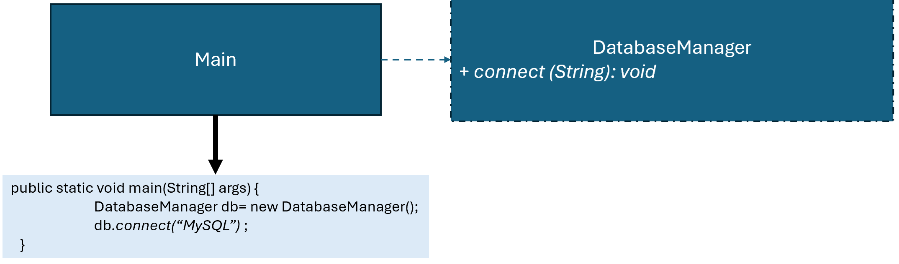

優點
缺點
總評
本次互動主要展現對於題目與策略模式的基礎陳述，無明顯進階認知投入、批判、驗證行為，互動層次尚屬初階答案導向與表面理解，應加強互動深度與AI協同討論。
interface DatabaseStrategy {
void connection();
}
class CassandraStrategy implements DatabaseStrategy {
@Override
public void connection() {
System.out.println("Connecting to Cassandra");
}
}
class MySQLStrategy implements DatabaseStrategy {
@Override
public void connection() {
System.out.println("Connecting to MySQL");
}
}
class PostgreSQLStrategy implements DatabaseStrategy {
@Override
public void connection() {
System.out.println("Connecting to PostgreSQL");
}
}
public class DatabaseManager {
private DatabaseStrategy databaseStrategy;
public DatabaseManager() {
}
public void setDatabaseStrategy(DatabaseStrategy databaseStrategy) { this.databaseStrategy = databaseStrategy; }
public void connect() {
databaseStrategy.connection();
}
public static void main(String[] args) {
DatabaseManager p = new DatabaseManager();
p.setDatabaseStrategy(new CassandraStrategy());
p.connect(); // 顯示 "Connecting to Cassandra"
p = new DatabaseManager();
p.setDatabaseStrategy(new MySQLStrategy());
p.connect(); // 顯示 "Connecting to MySQL"
p = new DatabaseManager();
p.setDatabaseStrategy(new PostgreSQLStrategy());
p.connect(); // 顯示 "Connecting to PostgreSQL"
}
}
!@#$報告
新設計有何優點?
這份程式也是用策略模式來處理不同資料庫的連線方式。
我先定義 DatabaseStrategy 介面，把「連線」這件事抽成 connection()，然後讓 Cassandra、MySQL、PostgreSQL 各自實作自己的連線方式。
DatabaseManager 不直接寫死要連哪個資料庫，而是透過 setDatabaseStrategy 決定使用哪個策略，呼叫 connect() 時再去執行對應的連線方法。
這樣可以在執行時自由切換資料庫，或新增新的資料庫類型時也不用修改原本程式，重點是把「會變的連線方式」獨立出來。!@#$
請檢視程式碼介面是否違反 Strategy 模式，並撰寫報告，討論新設計有何優點?

1. DatabaseManager p = new DatabaseManager( ); p.setDatabaseStrategy( new CassandraStrategy() ) ; p.connect(); //顯示 "Connecting to Cassandra" 2. DatabaseManager p = new DatabaseManager( ); p.setDatabaseStrategy( new MySQLStrategy() ) ; p.connect( ); //顯示 "Connecting to MySQL" 3. DatabaseManager p = new DatabaseManager( ); p.setDatabaseStrategy( new PostgreSQLStrategy() ) ; p.connect( ); //顯示 "Connecting to PostgreSQL"